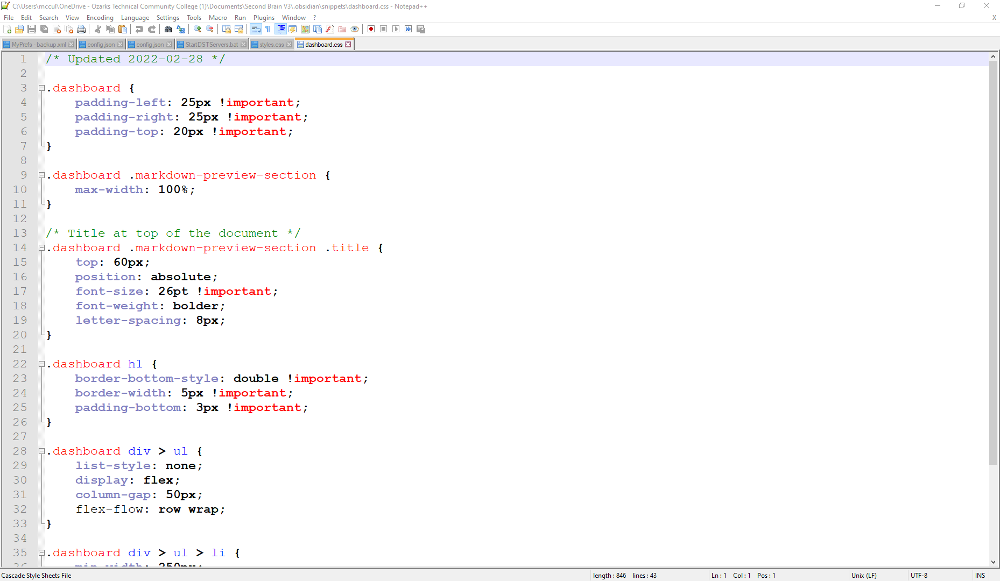

Why I'm Retaking WebDev I
Funny Story...
So, about four years ago I took WebDev I for the first time and got an A on it... when I really shoulda gotten a C or D. My instructor at the time gave me too much freedom to do what I wanted to do and I ended up working on a javascript project that should have waited until WebDev II. When she realised what had happened, she was already going through her own personal problems and was well on her way out the door. So, she gave me an A for effort.
Because she gave me an A for effort, I know quite a bit about javascript but very little about html and CSS.
Obsidian MD

Another reason why I want to retake WebDev I is so that I can make better plugins for Obsidian MD. The cool thing about Obsidian is that its made using Atom. You can go into developer mode and pull up the DOM for what ever page you're on in Obsidian. You can even make your own CSS snippets and stylize your notes and pages as you please.
The above image is the Dashboard snippet, and there are deffinanlty things that I recgonize, but what does .dashboard div > ul mean? Or whats this !important supposed to do? I guess what I'm saying is that I'm super fuzy on the syntax of CSS